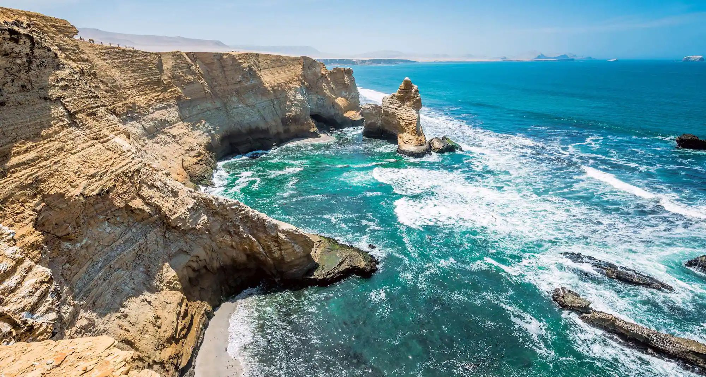
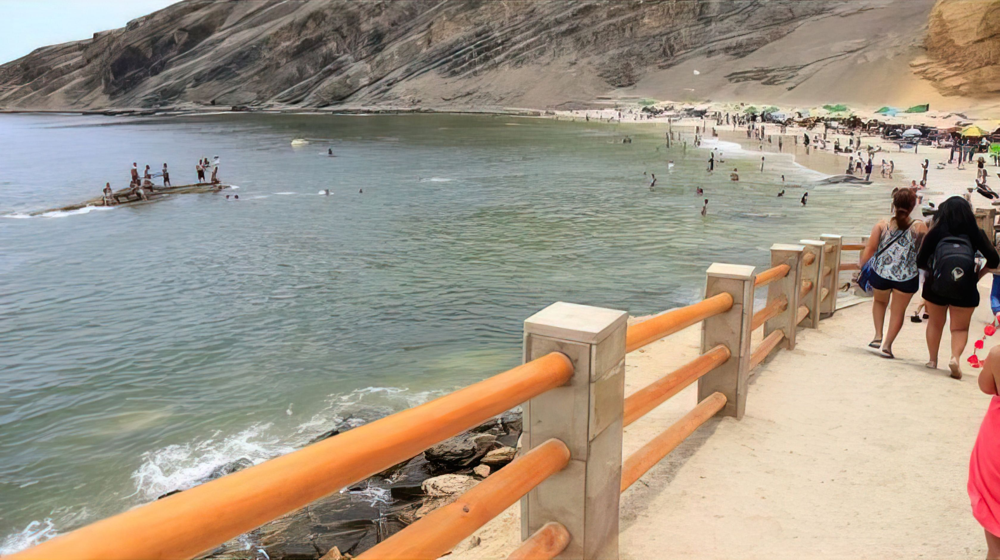
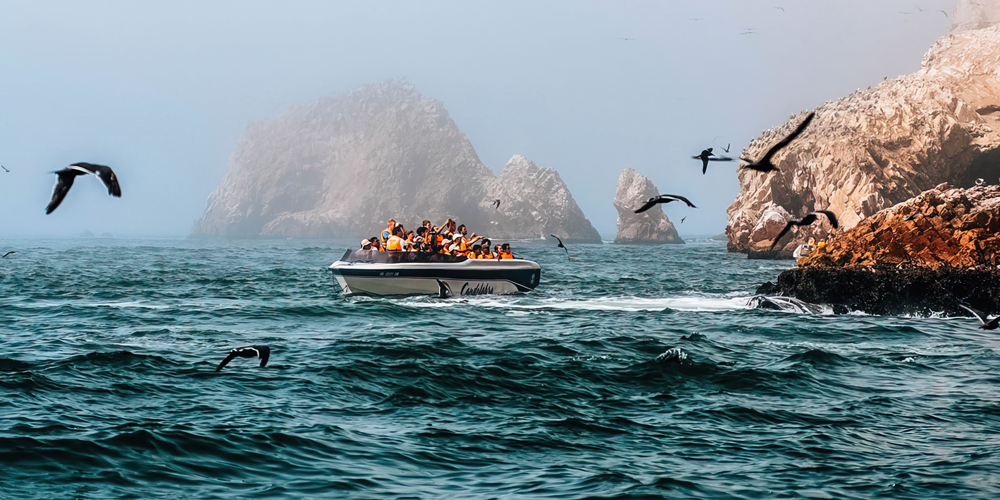

3 días y 2 noches - Tour por las playas de Paracas
Ica, Perú
- 

- 

- 
Descripcion General
Paracas es una ciudad de la costa oeste de Perú. Es conocida por sus playas, como El Chaco, ubicada en la bahía resguardada de Paracas. La ciudad es un punto de partida hacia las islas Ballestas deshabitadas, hogar de lobos marinos, pelícanos y pingüinos de Humboldt. La escabrosa Reserva Nacional de Paracas tiene abundante fauna y se extiende por desierto, océano, islas y la península de Paracas.
- Nadar en la hermosa costa con aguas cristalinas.
- Caminar por las hermosas costas que revosan de una abundante fauna.
- Alquilar un yate y viajar a las islas Ballestas.
- Jugar con uan gran variedad de animales marinos.
- Tomarse fotos.
Itinerario
Dia 1 - Senderismo al atardecer por la Reserva Nacional de Paracas
Nos reuniremos a las 15:30 horas en el Restaurant Paracas a la hora indicada para trasladarnos hasta la Reserva Nacional de Paracas, uno de los espacios protegidos más destacados de la costa sur de Perú. Una vez allí, iniciaremos una caminata de una hora y cuarto de duración por los dorados acantilados y tranquilas playas de la Reserva Nacional de Paracas. Con esta ruta de senderismo sentiremos la energía que desprende este lugar rodeado de leyendas como la del Kori Apu, el señor de la Montaña Dorada, que lo desvelaremos durante el paseo. Sentirás la fresca brisa marina mientras caminamos por la costa de Paracas bajo la luz rojiza del atardecer y se maravillaran con los paisajes vírgenes de este espacio natural. Finalmente, haremos una parada en la cima de uno de los acantilados para disfrutar del espectáculo de la puesta de sol sobre el océano Pacífico. Tras esto, el autobús los recogerá a su hotel.
Dia 2 – Visita de las Islas Ballestas
Nos dirigiremos primero hasta el puerto, donde subiremos a bordo de una lancha para iniciar el trayecto hacia las Islas Ballestas. Durante esta travesía, nos encontraremos con varios ejemplares de leones marinos, aves y pingüinos de Humboldt. ¡Les encantará! Nos acercaremos también al Candelabro de Paracas, una curiosa figura construida en una ladera y cuyo origen es aún desconocido. De hecho, solo se sabe que tiene más de 2000 años. El resto de teorías las descubriremos durante el tour. Tras un breve descanso, continuaremos el recorrido en tierra firme dentro de la Reserva Nacional de Paracas. En ella visitaremos el Centro de Interpretación para conocer mejor la fauna y la flora de este lugar. Veremos además los restos de la Catedral, una formación rocosa que durante años fue un auténtico emblema de Perú. Después de recorrer también las playas Roja y Yumaque, regresaremos al hotel.
Dia 3 – Visita al simulador rotatorio
Disfrutarás de un apasionante viaje al pasado de Perú. ¿Estas listo para retroceder hasta 2500 años en el tiempo? Mediante un simulador rotatorio de tres pisos observaran representaciones a tamaño real de algunos de los acontecimientos más notables de la historia de Latinoamérica. Gracias a la tecnología 3D y a los equipamientos audiovisuales y animatrónicos, gozarás de un mayor realismo y de una experiencia sin igual que tendrá una duración de 45 minutos. Serán testigos de la llegada de la expedición libertadora a Perú o asistir a las primeras intervenciones quirúrgicas realizadas en el continente. De esta forma concluirá su última estadía por Paracas ¡Fin de nuestro servicio!